A pinball-inspired ping pong launcher that reloads itself, one ball per pull.

I designed and built Mr. Top Hat with two teammates in ME102: a pinball-inspired launcher that fires, reloads and fires again without anyone touching a ball.
Shop tools only, ~$35, a launch that feels as good as it works.
Cardboard to plywood to acrylic, each fixing the biggest failure from testing.
Spring launch, angle lock and a two-gate reload, designed in CAD.
Targeted fixes over redesigns, until it balanced and reloaded on its own.
Design a ping pong launcher that is mechanically satisfying and simple enough to build with shop tools and a ~$35 budget.
How might we make a launcher that feels fun and intentional, not just functional?
- Repeatable launch force and angle
- Reload without handling the ball
- Stable on a table under load
- Buildable with shop tools for ~$35
Pinball machines. A spring-loaded plunger is instantly intuitive: pull back, release, repeat. We studied DIY launcher builds and spring mechanisms to translate that motion into something we could prototype.
Three prototypes, cardboard to acrylic. Each one fixed the biggest problem the last one showed us in testing.

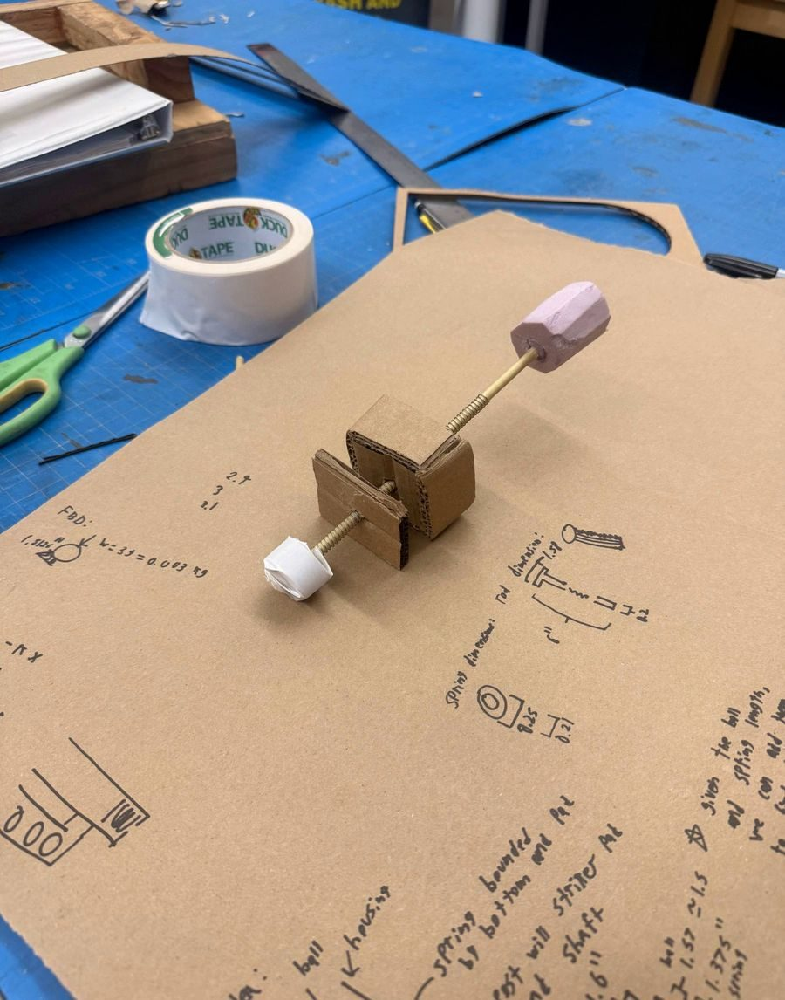


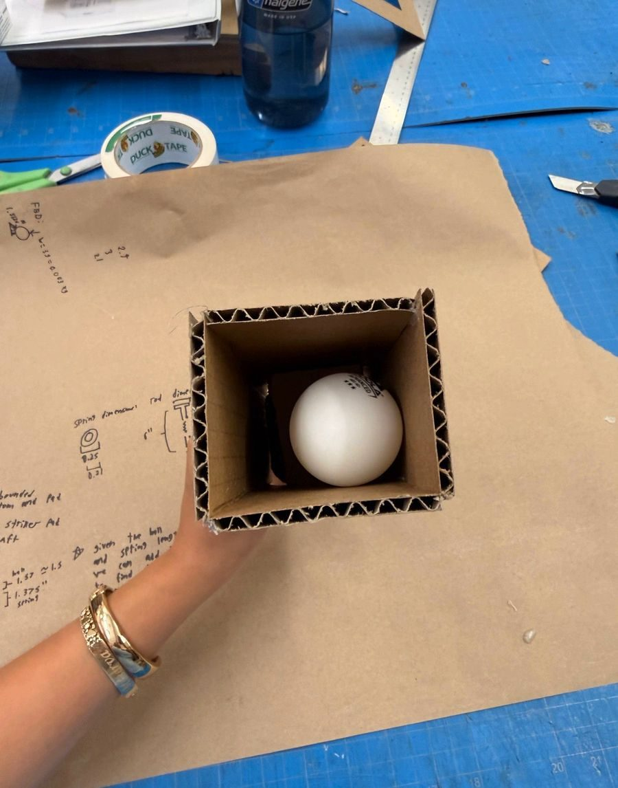
Low-fidelity cardboard catapult with a lever arm, built to validate spring force and scale. Side walls were left off on purpose to isolate the core actuation.

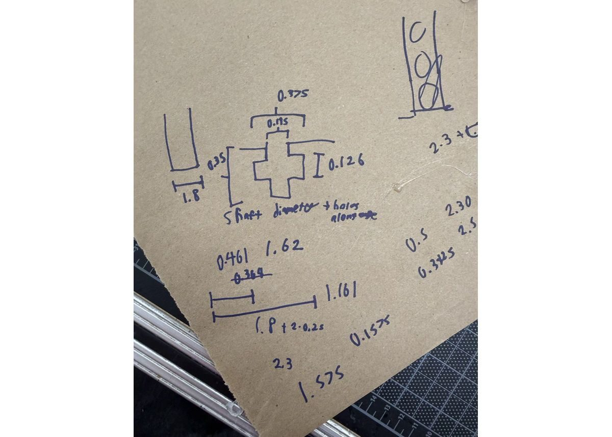


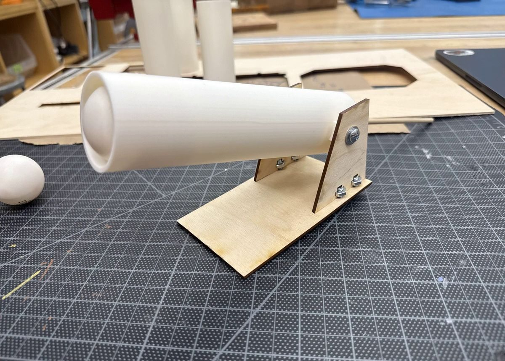
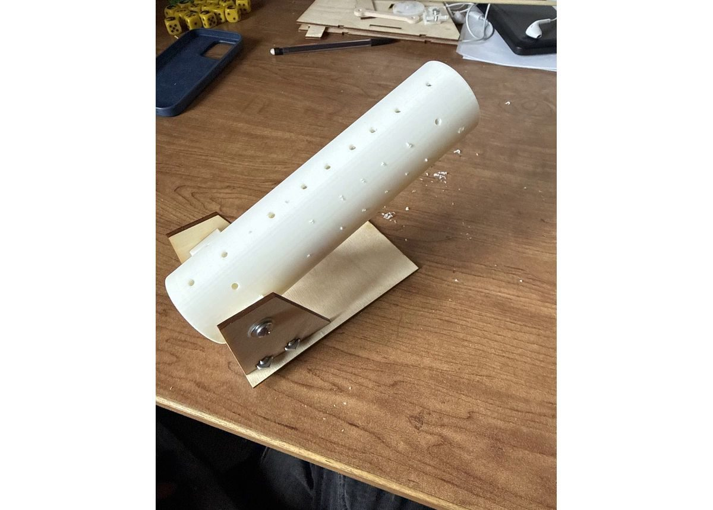
Spring-loaded barrel with laser-cut plywood walls and a PLA tube.
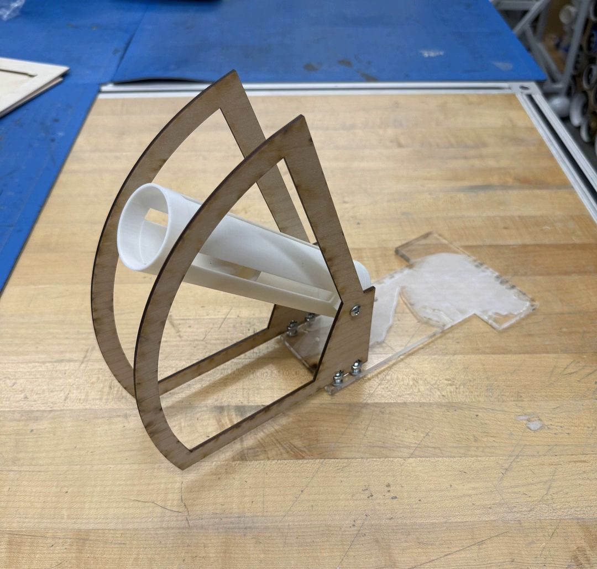
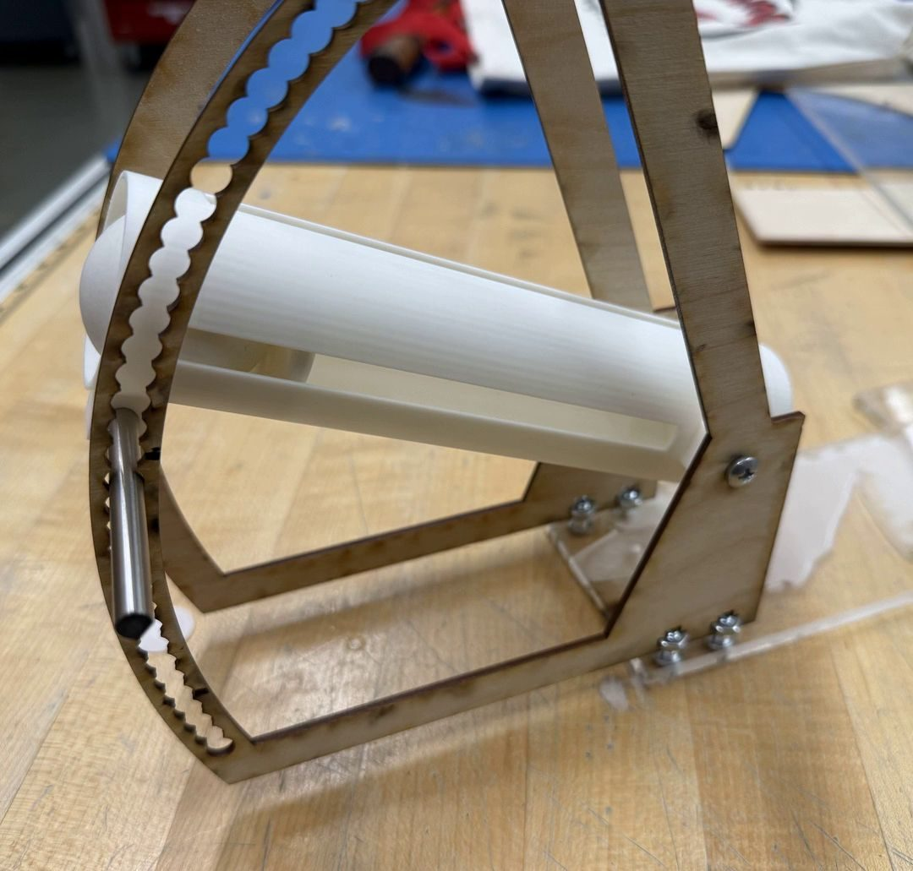
Moved to clear acrylic and 3D-printed parts.
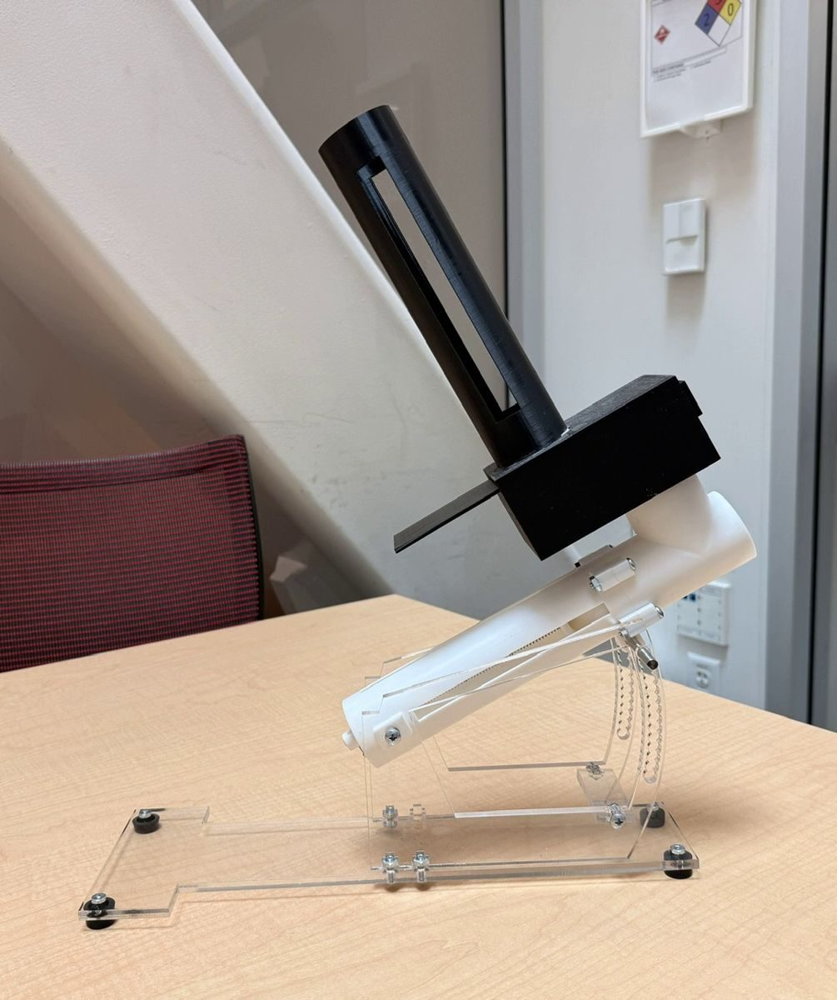


A 3D-printed PLA chamber driven by a plunger and three stainless steel compression springs in parallel, for a strong, consistent launch every pull.
A laser-cut acrylic frame with a notched angle arc and pivoting shaft, so the angle can be set and locked for repeatable shots.
A tower holds up to 5 balls. A two-gate escapement: the upper gate holds the queue while the lower sliding gate drops exactly one ball.
Balances on its own with no added weight. Clear acrylic keeps it stiff while leaving the mechanism visible.

Pull back, release, reload. The gate drops exactly one ball into the barrel, so you can keep firing without ever touching a ball.
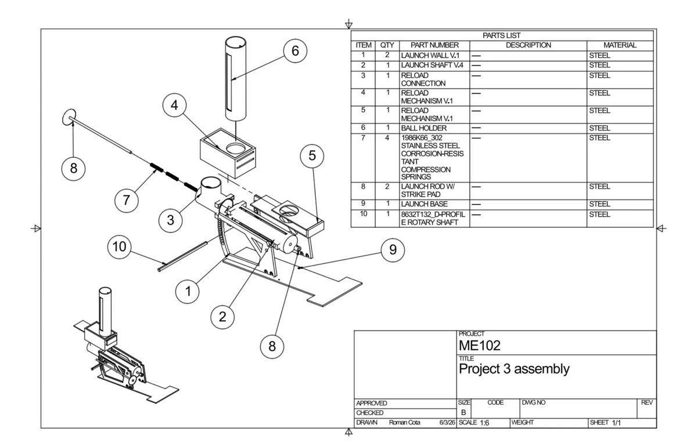

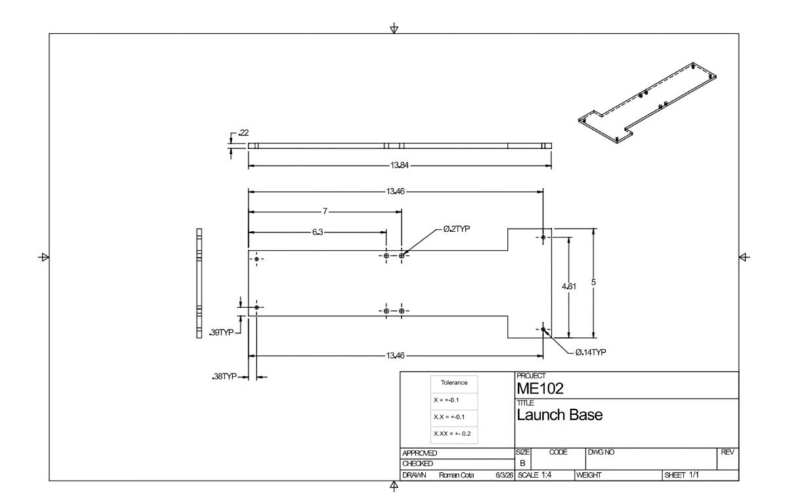
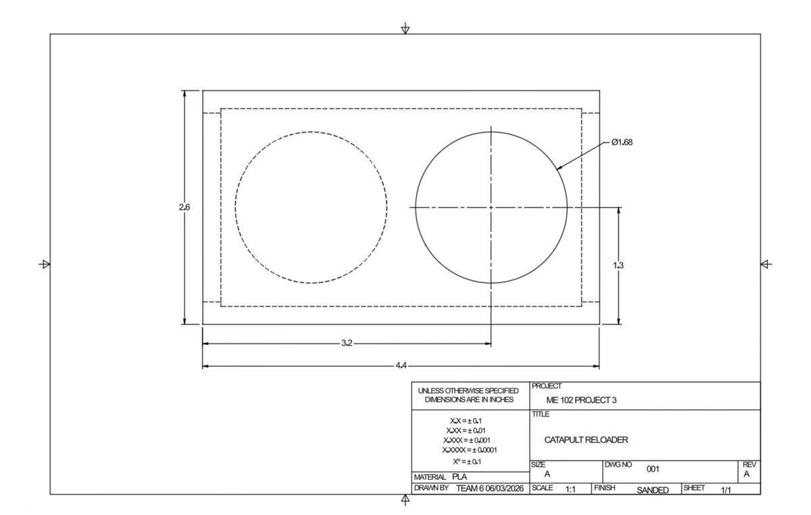
Dimensioned drawings of the barrel, frame and reload tower.
- A clean, minimal look with intentional details
- Strong design continuity from prototype 02 to final
- Targeted improvements instead of overhauls
- Redesign the pull with a dedicated grip
- Add hard stops so the plunger cannot disengage
- Add height adjustment alongside angle control
- Tighten part tolerances
Communicating design intent through quick sketches and models proved far more effective than verbal descriptions, and coordinating fabrication timelines across the team reinforced the value of planning iteration time from the start.

Minerva is curious about almost everything, and patient enough to learn it.